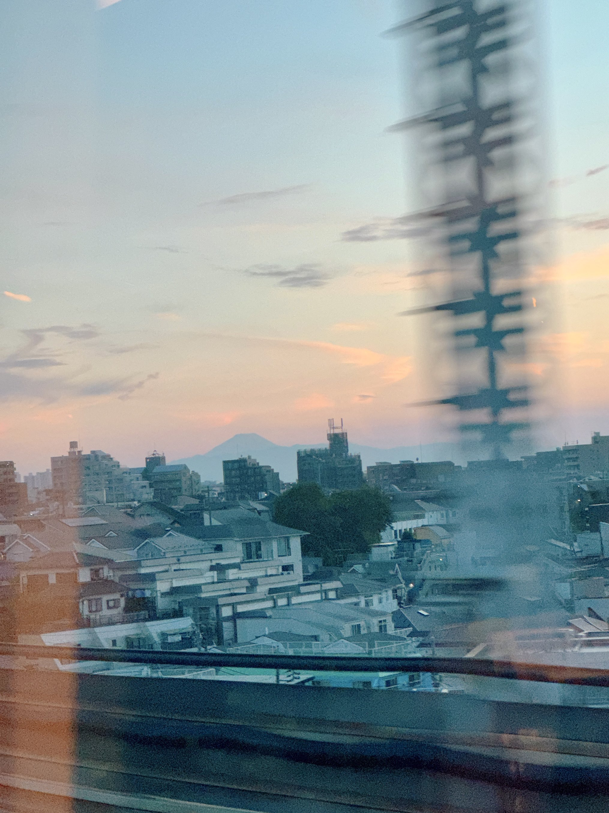
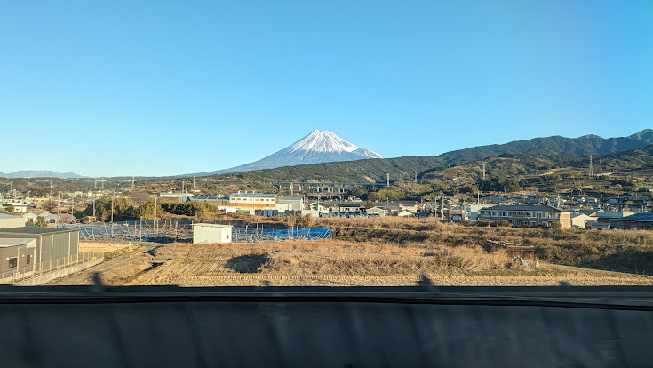
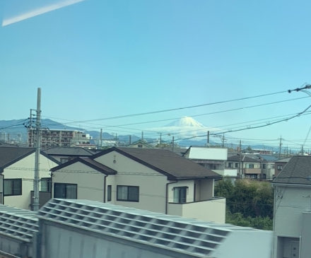

IL METEO DAL FINESTRINO
Previsioni di visibilità del monte FujiBeta
Il monte Fuji sarà visibile oggi dallo Shinkansen? Confronta le nuvole intorno alla cima e la limpidezza dell’aria in cinque zone di osservazione. Scegli treno, stazione di partenza e direzione, oppure inserisci un orario di partenza, per verificare le condizioni al passaggio.
Visibilità nei pressi di Shin-Fuji
Da Mishima a Shin-Fuji · Posto E · Monte Fuji a circa 24 km

Vedi la previsione per il tuo trenoScegli un treno o inserisci un orario di partenza
Cinque punti da cui vedere il monte Fuji dal treno
Probabilità di vedere il Monte Fuji dalle 06:00 alle 19:00 (ora giapponese)
Il Monte Fuji da Ota Shinagawa → Shin-Yokohama (Ota, Tokyo)

Cerca un piccolo monte Fuji lontano oltre i tetti di Tokyo. A circa 95 km di distanza, questo primo scorcio si coglie più facilmente con aria eccezionalmente limpida. È un primo accenno alla montagna, prima della vista molto più ampia vicino a Shin-Fuji.
Guarda le foto e la guida all’osservazione →Il Monte Fuji oltre la pianura di Sagami Shin-Yokohama → Odawara

Il monte Fuji appare oltre l’ampia pianura di Sagami e i crinali dei monti Tanzawa. Gli strati di pianura, colline e montagna rendono questa vista molto diversa da quella di Shin-Fuji. Le mattine asciutte d’inverno e d’inizio primavera offrono spesso contorni nitidi; anche dopo la pioggia il panorama può sorprendere.
Guarda le foto e la guida all’osservazione →Il monte Fuji vicino a Shin-Fuji Mishima → Shin-Fuji

Questa è la vista più vicina delle cinque: il monte Fuji può riempire il finestrino per circa tre o quattro minuti. La montagna si trova a nord della ferrovia, quindi di giorno i suoi versanti sono solitamente illuminati dal lato del treno. La cima innevata d’inverno e la montagna quasi senza neve d’estate danno volti molto diversi allo stesso tratto.
Guarda le foto e la guida all’osservazione →Il Fuji a sinistra Subito dopo la stazione di Shizuoka e il fiume Abe

Questa è l’unica delle cinque viste dal posto A. Verso Shin-Osaka, la curva della ferrovia porta brevemente il Fuji sulla sinistra dopo Shizuoka e il fiume Abe. Lo scorcio dura pochi secondi: comincia a guardare in anticipo. Una cima innevata si distingue tra gli edifici più facilmente di un profilo estivo velato dalla foschia.
Guarda le foto e la guida all’osservazione →Il Monte Fuji oltre il lago Hamana Hamamatsu → Toyohashi

La più lontana delle cinque viste mostra un piccolo Fuji oltre il lago e le colline circostanti. Guarda in lontananza dal lato E mentre il treno attraversa il lago Hamana. Serve aria molto limpida: è una ricompensa occasionale, non una vista da aspettarsi a ogni viaggio.
Guarda le foto e la guida all’osservazione →Queste cinque viste sono elencate nell’ordine da Tokyo verso Shin-Osaka. Il lato del posto e la distanza descrivono ogni punto; i tempi da Tokyo sono stime indicative per Nozomi/Hikari. Usa il selettore del treno sopra per gli orari del tuo servizio.
Il monte Fuji sarà visibile oggi dallo Shinkansen?
Contano due aspetti: le nuvole devono lasciare libera la cima e l’aria tra il treno e la montagna deve essere abbastanza limpida. Le previsioni sopra stimano separatamente queste condizioni per le cinque zone di osservazione lungo il Tokaido Shinkansen.
Le giornate asciutte d’inverno e all’inizio della primavera offrono spesso le viste più nitide. Nell’umidità estiva, la foschia può nascondere una montagna lontana anche sotto un cielo azzurro. Talvolta l’aria limpida dopo la pioggia permette di vederla anche d’estate.
La mattina offre spesso panorami lontani più nitidi rispetto al pomeriggio. Più tardi, la montagna può apparire come una sagoma senza i dettagli dei versanti. Le previsioni orarie aiutano a confrontare le condizioni intorno all’orario del tuo passaggio.
Quattro di questi panorami sono dal posto E, lato montagna. Il Fuji a sinistra, subito dopo Shizuoka viaggiando verso Shin-Osaka, è la breve eccezione dal posto A, lato mare. Se le nuvole nascondono la montagna, scopri idee per una giornata nuvolosa.
Modello di previsione beta: probabilità di visibilità = probabilità che la cima non sia coperta da nuvole × probabilità che la visibilità atmosferica raggiunga la distanza effettiva di osservazione. Poiché lo sguardo sale in diagonale attraverso lo strato di foschia verso la cima, la distanza effettiva è inferiore a quella orizzontale; una maggiore umidità rende più spesso lo strato di foschia. I dati meteorologici provengono da Open-Meteo sotto CC BY 4.0 e vengono convertiti in una nostra stima di probabilità. In una verifica retrospettiva sui dati delle foto dal finestrino, il modello ha classificato come visibili 9 giorni su 10 in cui la fotografia era riuscita. Gli orari di passaggio sono approssimativi e basati sui servizi Nozomi. Cambiamenti improvvisi del tempo possono rendere le previsioni inesatte. Per idee nelle giornate nuvolose, consulta guida al Monte Fuji.